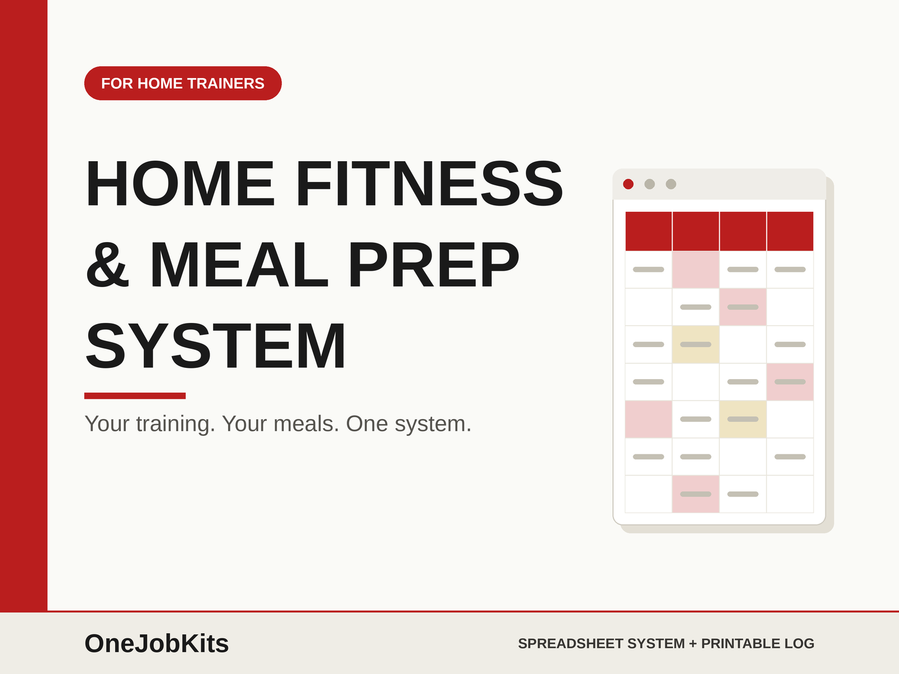

OneJobKits · Kit #20
Home Fitness & Meal Prep System — meal prep planner template

You already have a programme. You already know what you eat. What you don't have is one place where it all lives — so the log is in one app, the meal plan is in your notes, the measurements are in a notebook from March, and whether last month actually went well is a feeling, not a number. A good meal prep planner template fixes the food half; this system fixes the whole desk.
This page gives you a week of the tracking free: the Weekly Training Log. Below it is the full system — your training, meal prep, groceries, habits and measurements in one organised workbook, built to track your decisions, not to make them for you. There are no workout programmes, no meal plans and no advice of any kind in here — structure and tracking fields only.
Free download — start with the Weekly Training Log
The Weekly Training Log is a 3-page fillable PDF (170 fields): five session blocks for one week — date, session name, exercise / set / reps / weight / notes — plus a weekly review page: sessions completed, bodyweight start → end, personal records, keep-doing notes. Tracking only, no programmes or advice.
Download the free Weekly Training Log (PDF)Get it on Gumroad instead
What the free log does not do: it remembers one week, on paper. The full system below remembers everything and does the arithmetic — personal records pulled from the log by themselves, habit percentages, bodyweight change — so the record compounds instead of scattering across apps and notebooks.
What's inside the full system
- Tracking workbook (spreadsheet, 9 tabs; Excel + Google Sheets) — START HERE · Dashboard — sessions, sets, habit marks and bodyweight first/latest/change, all automatic · Workout Log — 500 rows: date, session, exercise, set #, reps, weight, rest, effort, with set volume calculated · Personal Records — type your exercise names once; best weight, date, best reps, best set volume and times logged pull automatically from the log · Programme Planner — a week-at-a-glance split grid plus a session-detail table, filled with the programme you follow · Meal Prep Planner — 6 meal rows × 7 days plus a prep-session task list, for the meals you choose · Grocery List Builder — 88 item rows under 11 store-section headers, needed/bought columns · Habit Tracker — 12 habits × 31 days with automatic totals and % of days · Measurements Log — 104 entries: weight, waist, hips, chest, arms, thighs, body-fat % from your own device, with an automatic first-vs-latest progress view and a bodyweight line chart
- Printable Training Log (fillable PDF, 8 pages, 414 fields) — cover/how-to, 3 training-log pages, a weekly session planner, 2 weekly meal-prep grids, and a weekly review + measurements page
- Worked example file — the workbook filled with a fictional person's four weeks (shown below)
- Setup Guide (PDF, 6 pages) — what's inside, setup for Excel and Sheets, the weekly routine, reading your own log, the monthly review, printing
- Pro ($49) adds: the PRO workbook (11 tabs) — a 12-Week Cycle Planner (block layout + weekly targets table) and a Pantry Inventory tab
A filled example — so you can see the finished thing
The kit's worked example follows a fictional person, Daniel Reyes, through four weeks of his own programme. Daniel is invented; what the file demonstrates is the tracking working end to end:
| From the example file | What is filled in |
|---|---|
| Workout Log | 12 sessions logged across the four weeks — sets, reps and weights entered so set volume calculates and progressive overload is visible on the page, not remembered |
| Personal Records | His exercise list typed once; bests and their dates pulled from the log automatically — the PR view maintains itself |
| Meal Prep + Grocery | The weekly grid filled for his meals, and the grocery builder carrying the week's list by store section |
| Habits + Measurements | Habit marks across the month with totals and percentages calculated, and 5 measurement entries feeding the first-vs-latest progress view |
Four weeks is all it takes to see the point: the system turns "I think it's going fine" into rows you can point at.
Who it is for
Adults who train at home (or anywhere) and already follow their own programme — from a coach, a book, or their own design — and want their training, meal prep, groceries, habits and measurements organised in one system instead of five apps and a notebook.
Who it is not for
Anyone looking for a workout programme, a meal plan, a diet, or health advice. There is none in here — on purpose. This kit organises and tracks; it never instructs, and it is not a substitute for a qualified professional.
Questions buyers ask
- Does it include a workout programme or a meal plan?
- No — none, on purpose. There are no workout programmes, no meal plans, no exercise instructions and no diet or nutrition content anywhere in this kit. It is a tracking and organisation system for the programme and the meals you already follow — from a coach, a book or your own design. The planner grids and log fields hold your decisions; the system never makes them for you, and it gives no health advice of any kind.
- How do the Personal Records work?
- You type your exercise names once. From then on, the Personal Records tab reads your Workout Log and pulls, per exercise, your best weight, the date you lifted it, your best reps, your best set volume and how many times you've logged it — automatically. Progressive overload stops being a memory: last month's numbers are on the page when you plan this month's.
- Spreadsheet or paper?
- Both are in the kit. The workbook (Excel + Google Sheets) is the system of record — dashboard totals, calculated set volume, habit percentages, the measurements progress view. The Printable Training Log is an 8-page fillable PDF (414 fields): paper log sheets, a weekly session planner, two weekly meal-prep grids and a weekly review + measurements page, for people who track at the gym or the kitchen counter and transfer — or who simply think better on paper.
- What does Pro add?
- The PRO workbook (11 tabs instead of 9): a 12-Week Cycle Planner — a 12-week block layout plus a weekly targets table, for laying your own programme over a full cycle — and a Pantry Inventory tab, so the grocery list builder only buys what is actually missing from your shelves.
- How does the meal prep side work?
- The Meal Prep Planner is a weekly grid — six meal rows across seven days — for the meals you choose, with a prep-session task list beside it. The Grocery List Builder turns the week into one trip: 88 item rows grouped under 11 store-section headers with needed/bought columns. It organises your eating; it does not tell you what to eat.
- What does the Dashboard actually show?
- The month at a glance, all automatic: sessions logged, sets logged, habit marks, and bodyweight first → latest → change from the Measurements Log, which also keeps an automatic first-vs-latest progress view across weight, waist, hips, chest, arms, thighs and body-fat percentage (from your own device) with a bodyweight line chart. Whether last month went well becomes a number, not a feeling.
- What does the free log cover, and what does the full system add?
- The free Weekly Training Log is 3 fillable pages (170 fields): five session blocks for one week — exercise, set, reps, weight, notes — plus a weekly review (sessions completed, bodyweight start → end, personal records, keep-doing notes). One week, tracked properly. The full system is every week: the log feeding personal records, the planner, meal prep and groceries, habits and measurements, with the dashboard reading it all back to you.
Prices
Base: $29 · Pro (adds the 12-week cycle planner + pantry inventory): $49 — one-time payment, digital download. No subscription; the files are yours.
Can't find the kit you need?
We build it. Ask us — first asker gets it at half the shelf price. Tell us the job at onejobkits.com and we will build the kit for it.
Related kits
Please know: this is a tracking and organisation system only — not medical, fitness or nutrition advice, and not a substitute for a qualified professional. Talk to a professional before starting or changing any exercise or eating routine. It contains no workout programmes, no meal plans and no health claims. All example data is fictional (Daniel Reyes is invented, and the example file says so).